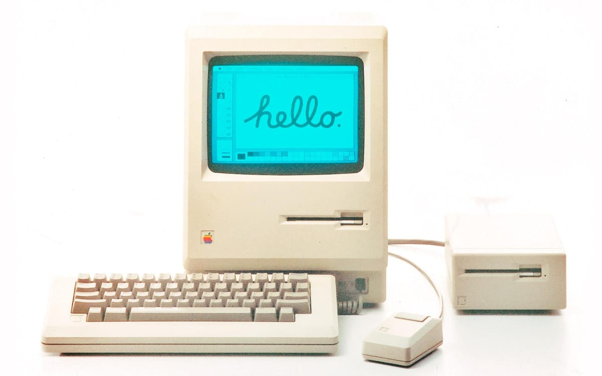
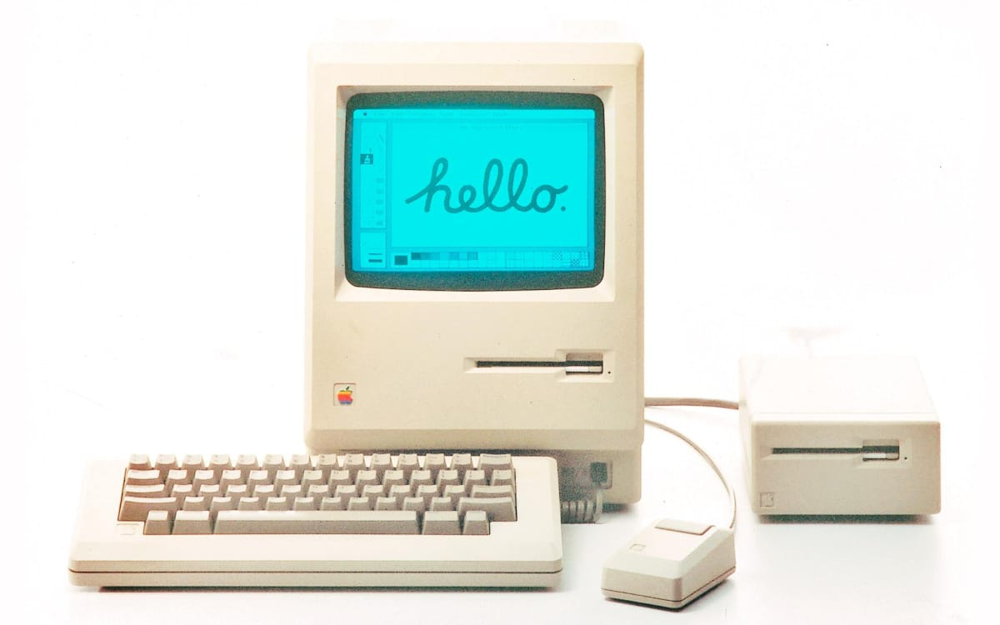
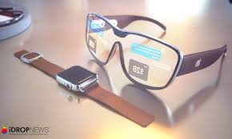
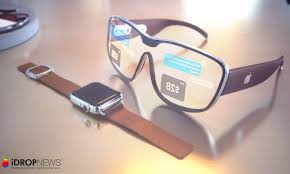

3. Le Commodore PET (1977)
Le Commodore PET est un autre ordinateur de cette époque, lancé en même temps que l’Apple II. Il était plus abordable et surtout prêt à l'emploi, destiné principalement au marché de l’éducation. Il comportait un clavier intégré et un moniteur, rendant son design compact et attractif pour les écoles et les petits bureaux.
 

 
